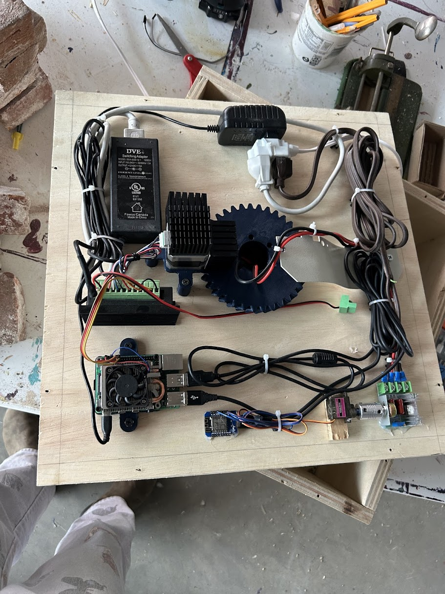
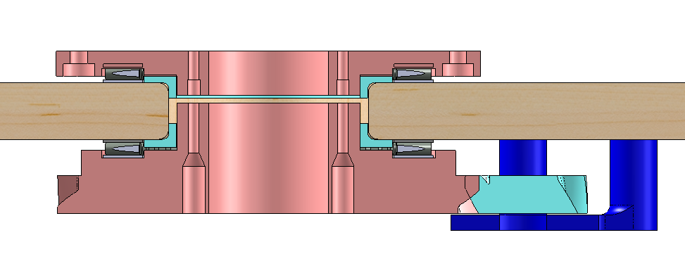
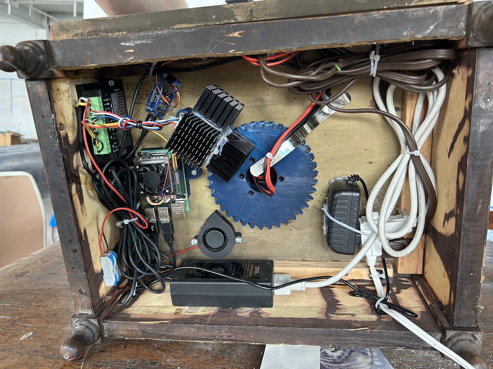
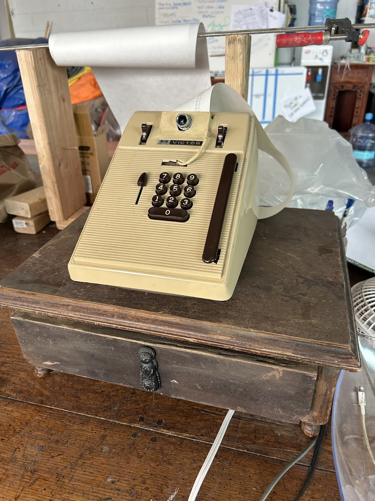

Jesse Gill Saligman
Watching Turntable (Spinning Eye)
Face-tracking, noise-on-target Victor receipt printer on a custom rotating base
Overview

The objective: make an old machine turn and face you—and when it locks on, hit you with that gloriously scary Victor receipt-printer noise. I had access to a few vintage machines; the Victor receipt printer had the best sound, so the goal became tracking a person and triggering the print clatter when they’re centered.
Mechanical Design

For rotation, I used spare thrust bearings and a simple wooden box as the plinth. I drilled a 2" pass-through and designed a top plate for the machine plus a large drive gear beneath. The two plates sandwich a thrust bearing against the wood so the printer is fully constrained and spins smoothly. A 3D-printed bushing handled radial support—no separate radial bearing needed.
I made assembly painless: the bearing/gear module uses six M3s into heat-set inserts, all with easy access. A smaller helical gear on a stepper mates with the big ring gear. (Cross-section below.)

Electronics & Power

Control runs on a Raspberry Pi with a USB web camera. Power: 5 V/3 A for the Pi and 12 V for the stepper driver (directly controlled from the Pi). Heat was a concern, so the 12 V rail has a fan aimed at the motor, and the driver current is limited to ~1.5 A.
Prototype #1 used a servo tugging a string on the printer’s internal lever to force the “noise/print” action. It worked but wasn’t robust. Digging deeper, I found the printer’s motor is 125 VAC, controlled by a panel dial. I added an inexpensive 125 VAC motor controller—its pot wasn’t low-voltage (it actually carried mains), so I hid the module in the base and used a servo to twist the onboard potentiometer.
Since Pi PWM to servos can jitter, I added a cheap ESP8266 (MicroPython) that takes serial commands from the Pi and drives the servo smoothly. It’s mounted on the underside of the lid for easy access. Only the camera and the motor have twist-tolerant wiring loops.
Control & Behavior
The Pi runs a simple face-tracking loop. It measures the face’s X position vs. frame center, computes an offset, and sets the stepper’s velocity proportional to that offset. Early on it was jittery if I sent discrete step counts; switching to continuous velocity control with ramping smoothed it out. When a face sits near center, the Pi sends a serial command to the ESP to push the servo to “full,” enabling the AC motor and unleashing the noise.
Build Notes & Revisions

During assembly the first servo died and the printer briefly bound up—tempting to ditch the noise feature and just track people, but solving the AC motor control made the whole interaction feel alive. The electronics were reorganized into a smaller bedside table enclosure once everything proved reliable.
Live Demo
Status & Install
The unit is fully assembled, electronics are tidy, and it’s ready for display—turns to greet you, then prints loudly on target. Exactly the vibe I was aiming for.